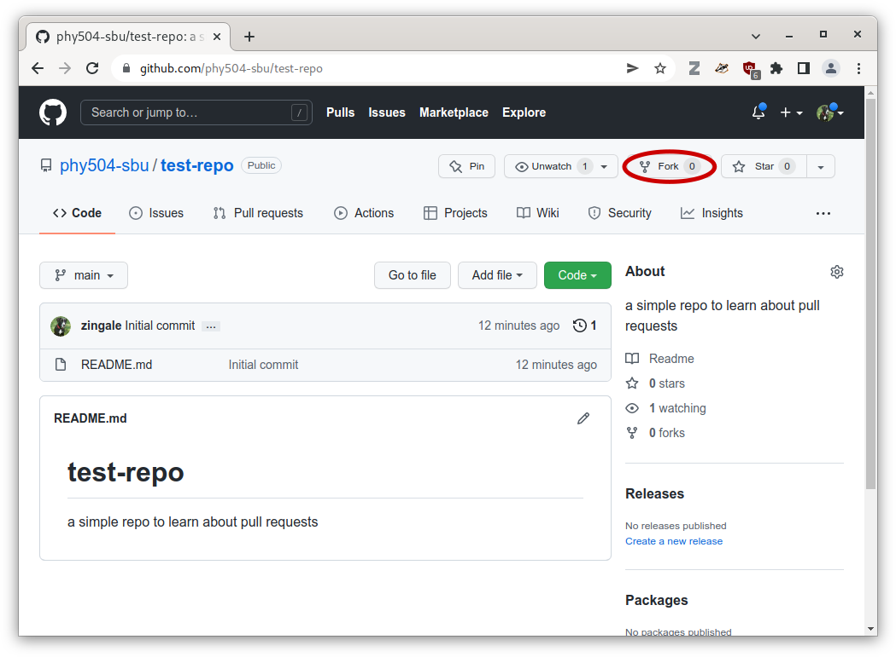
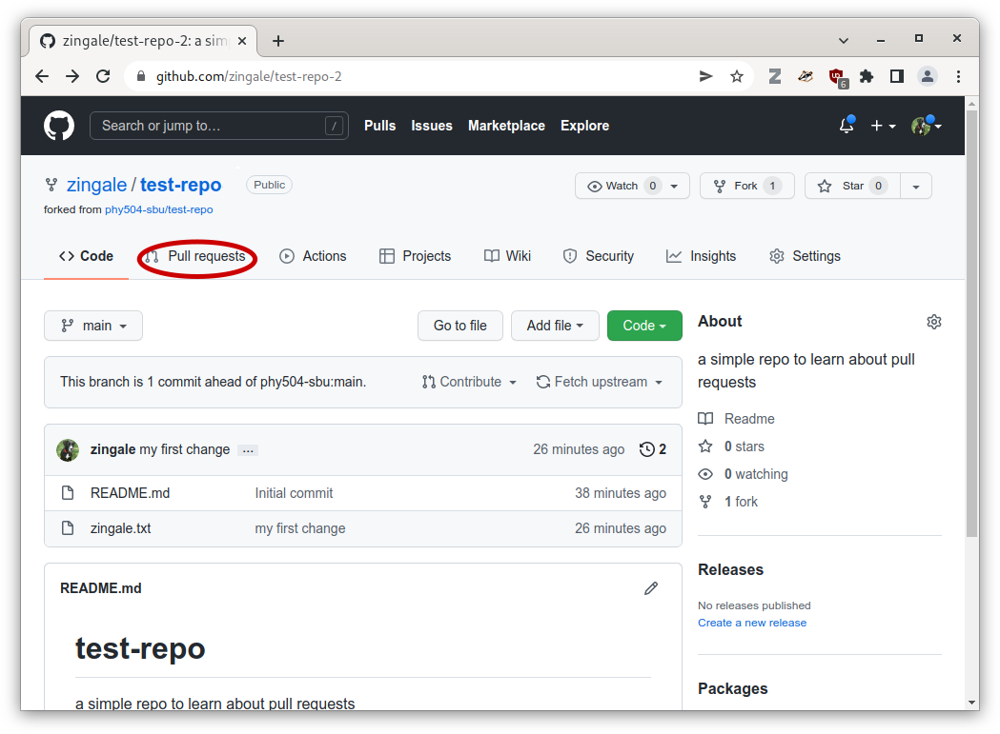
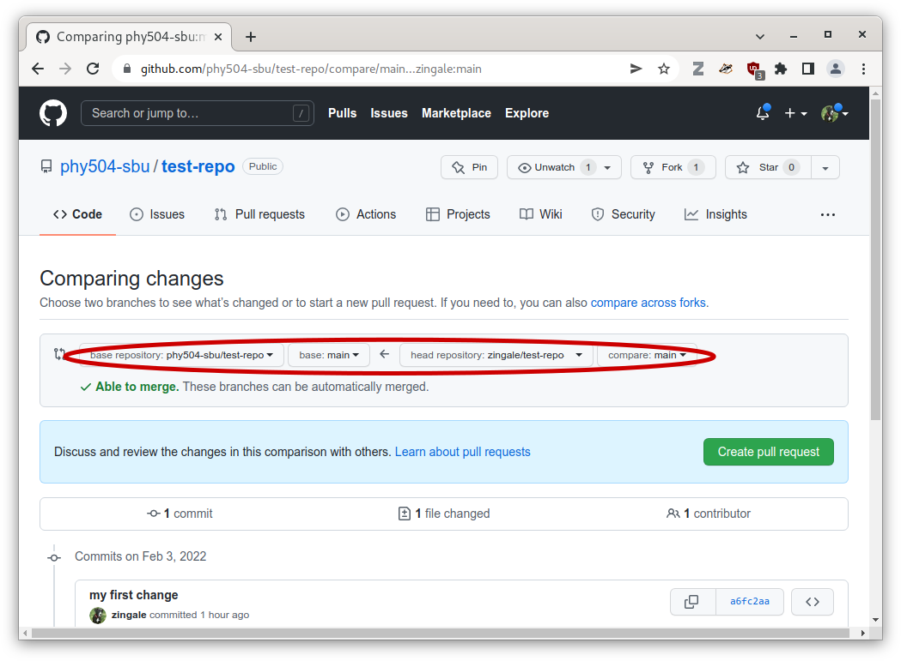
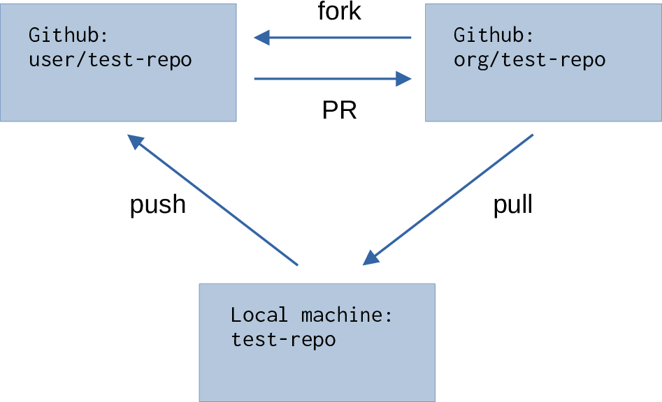

Pull Requests
Github allows you to give permissions to users to contribute to a repository (read, write, or admin access). But the best type of workflow is one where users don’t push directly to the git repo. Instead it is based around pulls.
How do we contribute to a project that we don’t own?
Here’s a github organization for our class: https://github.com/phy504-sbu-s24
and here’s a simple repo in this organization: https://github.com/phy504-sbu-s24/test-repo
An organization is meant to be used by a collection of developers who can all have different access permissions. It provides tools for managing who can do different things to the repos under its control.
Let’s clone this repo:
git clone git@github.com:phy504-sbu-s24/test-repo.git
cd test-repo
Now, let’s each try to add a file of the form username.txt containing your full name. Ex:
echo Michael Zingale > zingale.txt
git add zingale.txt
git commit
Now try to push it to the repo we clone:
git push
what happened?
The issue is that you don’t have write permission to that repo, since I own it. So you are denied access.
This is okay. The workflow that github emphasizes is one based around pulls not pushes, so let’s see how we do that.
First, we need to fork the repo—this creates a clone under our control that we can do with as we please. Click on the “fork” button.
It may ask you where you want the fork to life—you want it to live under your profile / username.
This will bring you to a new github page, displaying the fork, with a URL that should look something like: https://github.com/zingale/test-repo
Now click on the code button and copy the SSH location.
We want to add this fork as a new remote:
git remote add myfork git@github.com:zingale/test-repo.git
(again, make sure you replace that with the link to your repo).
Now you can do:
git push myfork
If you reload your github page, you should see your change there.
Now we can do all pull-request. Select “pull requests”
Then click on the “New pull request” button, and you’ll see something like:
This is showing that you are asking to merge the changes in your fork into the
class test-repo repository.
Click on create pull request, type in a comment about what this does, and then click on the create pull request button again.
Now it is out of your hands.
The owner of the class repo (me) will get a notification that you want to incorporate your changes into the class repo, and I can merge them via the github web tools.
The overall workflow that we did: fork, push to our fork, issue a PR, looks like:
{kind=link}
Our class notes github
Let’s take a tour of our class notes on github: https://github.com/zingale/phy504
There are a lot of other features that github provides that we will explore later in the semester, including:
github actions : automating some workflows (like testing) on our code
github pages : building and hosting web pages for our project